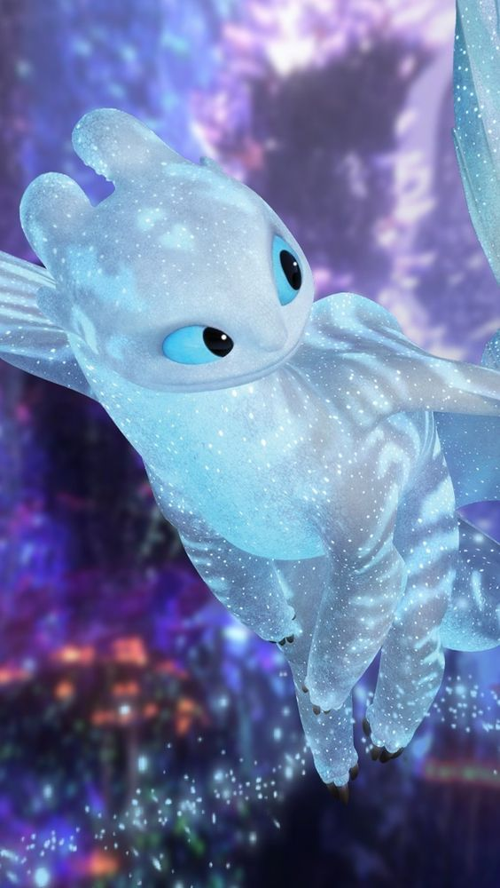
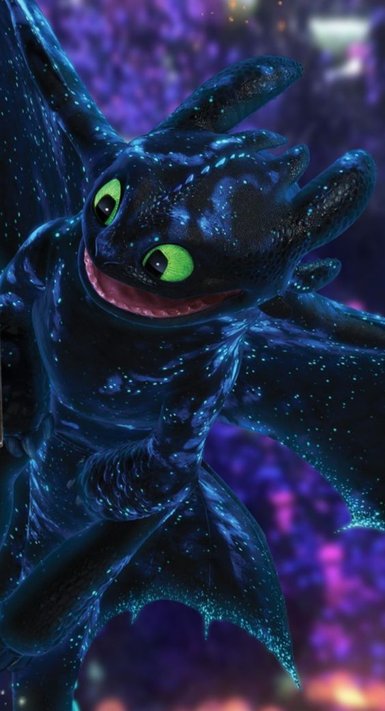
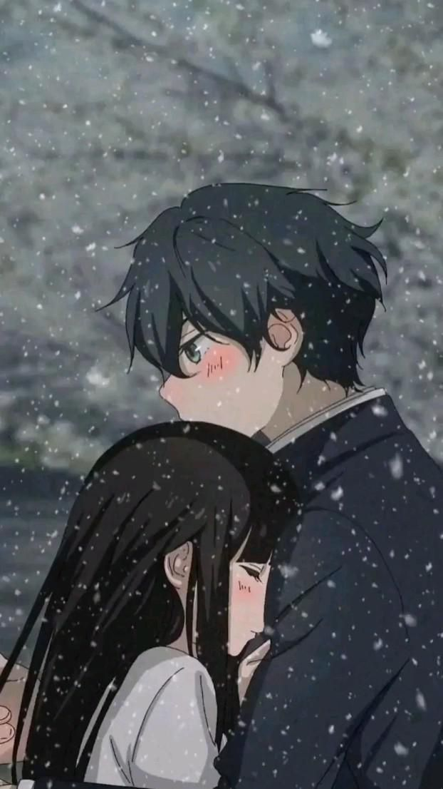
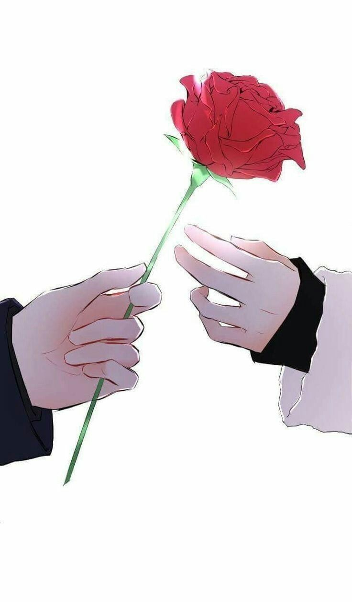
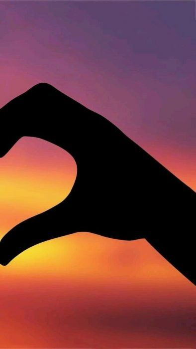
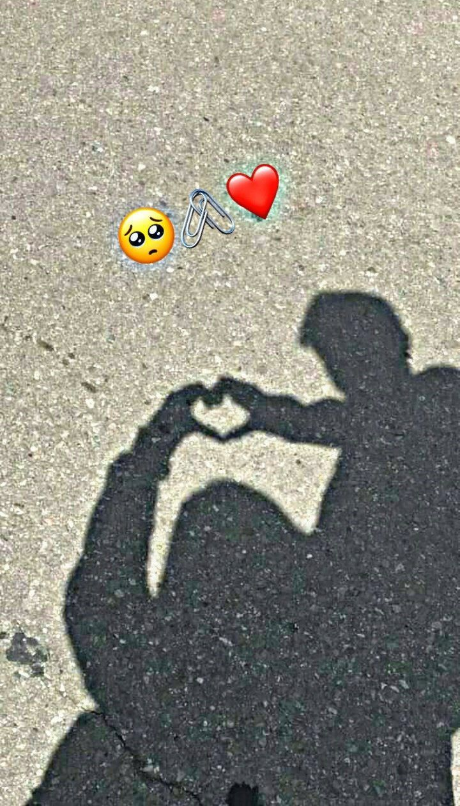
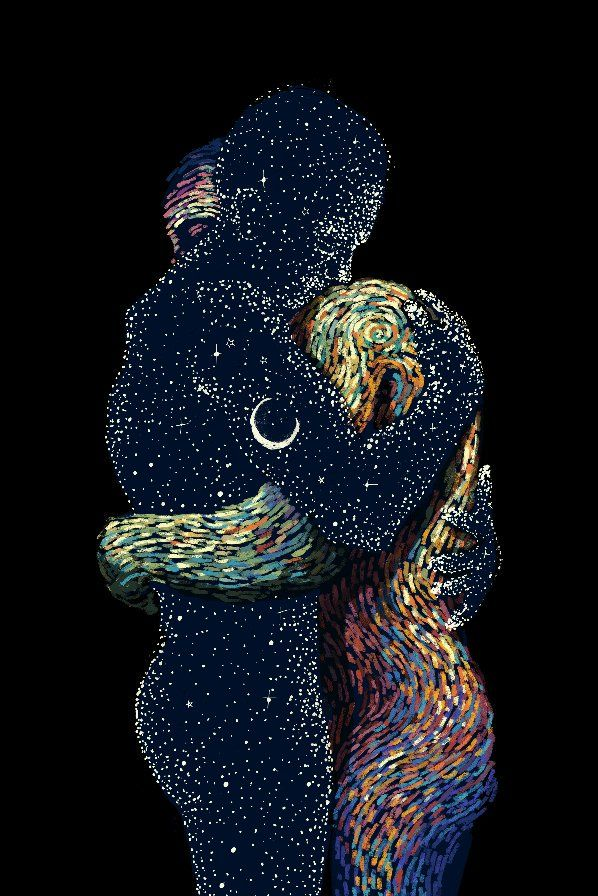
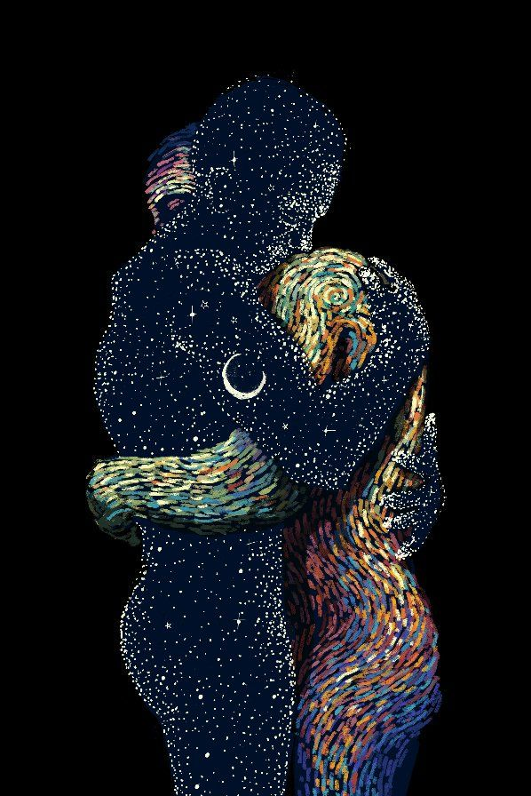
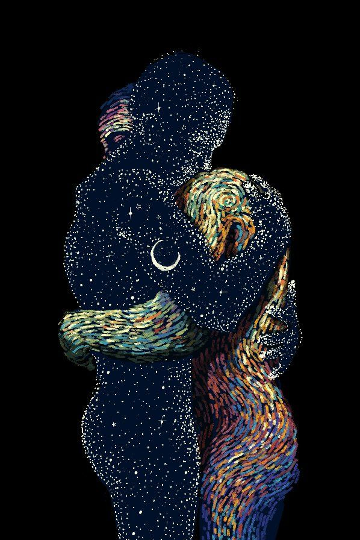

Querido amor, Contigo he descubierto la magia del amor verdadero. Cada momento a tu lado está lleno de luz, mi corazón late con fuerza cuando pienso en ti. Este año ha tenido altibajos, pero caminar juntos de la mano me llena de esperanza. En medio de la tormenta, eres mi refugio. Tu risa es música para mi alma. Agradezco cada día por tenerte en mi vida. Eres un regalo, una bendición. Admiro tu belleza, tanto por fuera como por dentro. Mirando tus ojos, veo nuestras aventuras futuras. Sueño caminos llenos de amor, de crecimiento mutuo. Quiero celebrar contigo muchos atardeceres más. Que sigamos construyendo juntos, que nuestro hogar esté lleno de paz. Tú llenas mi mundo de luz, eres mi mayor tesoro. Te amo profundamente.
Te amo mucho amor de mi corazón
- Tu sonrisa que ilumina mis días
- Tu dulzura y paciencia conmigo
- Las largas conversaciones que tenemos
- La química y complicidad entre nosotros
- Tu sentido del humor
- Lo positivo que eres ante la vida
- Tu creatividad e ingenio
- Lo atenta y cariñosa que eres
- Tu belleza natural
- Tu inteligencia y curiosidad
- Lo divertidas que son nuestras salidas
- Nuestros paseos bajo la luna
- Tu pasión por el arte
- La paz que siento cuando estoy a tu lado
- La confianza y entrega que nos tenemos
- Lo bien que nos complementamos
- Tus gestos de cariño inesperados
- Nuestras películas y series favoritas
- El futuro que planeamos juntos
- Tu determinación por tus sueños
- Las travesuras que hacemos como niños
- Tu pasión por los gatos
- Las recetas y platillos que me enseñas
- Nuestros bailes improvisados
- Tu compañía en esos días grises
- Tu respeto por mi individualidad
- Nuestras fotos espontáneas juntos
- Tu voz melodiosa al hablar
- La historia única de nuestro amor
- Tu calidez al abrazarme
- Tu amistad incondicional
- La tranquilidad de estar a tu lado
- El cómo celebramos los buenos momentos
- Como me haces sentir seguro y libre
- El cómo superamos los problemas
- Tus palabras de aliento cuando estoy triste
- Nuestras locuras al aventurarnos juntos
- Cómo me apoyas en mis metas
- La forma en que me haces reír
- Los momentos íntimos que compartimos
- Tu familia que también es la mía ahora
- La esperanza que tengo de formar una familia a tu lado
- Nuestros abrazos interminables al encontrarnos de nuevo
- Tu increíble fuerza y resiliencia interior
- Tu autenticidad para expresar tus sentimientos
- Tu valentía y coraje por tus ideales
- Lo bien que te ves sexy con cualquier tipo de ropa
- Tus caricias tiernas que me derriten
- Tus sacrificios por hacerme feliz
- El cómo quieres que también cumpla mis sueños
- Como me tranquiliza escucharte dormir apacible
- La esperanza con la que afrontamos cada mañana juntos
- Nuestras reconciliaciones después de cualquier disgusto
- Tus detalles para que me sienta especial todos los días
- La sensación de que nada puede salir mal si estamos juntos
- La emoción que siento cuando me abres tu corazón
- La forma en que puedo contarte todo con confianza
- Lo feliz que soy por el simple hecho de estar a tu lado
razones por las que te amo


Nuestros momentos especiales







 


MEVAK:"Es el arte de apreciar todas esas pequeñas cosas de la vida"